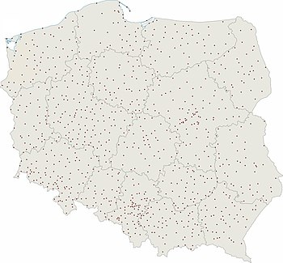

Miasta Polskie
Miasta Polskie
Miasta w Polsce – miejscowości w Polsce posiadające status miasta. Od 1 stycznia 2021 roku na terenie Polski są 954 miasta[1]
Polskie miasta należą do następujących przedziałów wielkości pod względem liczby mieszkańców (według danych Głównego Urzędu Statystycznego z 1 stycznia 2020)[2]:
1 miasto powyżej 1 000 000: Warszawa
4 miasta od 500 000 do 999 999: Kraków, Łódź, Wrocław, Poznań
6 miast od 250 000 do 499 999: Gdańsk, Szczecin, Bydgoszcz, Lublin, Białystok, Katowice
26 miast od 100 000 do 249 999: Gdynia, Częstochowa, Radom, Toruń, Sosnowiec, Kielce, Rzeszów, Gliwice, Zabrze, Olsztyn, Bielsko-Biała, Bytom, Zielona Góra, Rybnik, Ruda Śląska, Opole, Tychy, Gorzów Wielkopolski, Płock, Dąbrowa Górnicza, Elbląg, Wałbrzych, Włocławek, Tarnów, Chorzów, Koszalin
45 miast od 50 000 do 99 999 (największe w tym przedziale to Kalisz, Legnica, Grudziądz, Jaworzno, Słupsk)
94 miasta od 25 000 do 49 999
221 miast od 10 000 do 24 999
186 miast od 5 000 do 9 999
217 miast od 2 500 do 4 999
135 miast od 1 000 do 2 499
8 miast poniżej 1 000.
66 miast to miasta na prawach powiatu. W polskich miastach organami administracji publicznej jest prezydent miasta lub burmistrz. Organem stanowiącym i kontrolnym jest rada miejska.
W roku 1997 w miastach mieszkało 61,89% ludności Polski i był to najwyższy wynik w historii[3].
